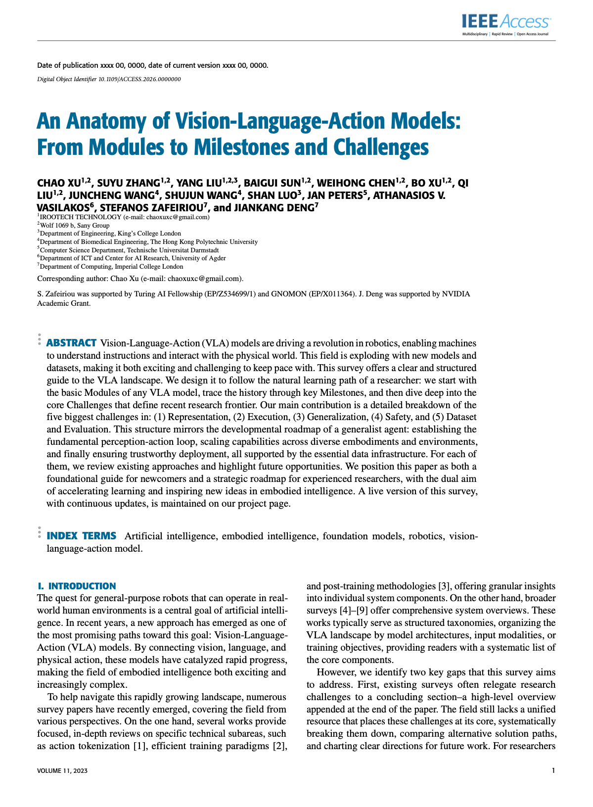

Fragmented Taxonomies
模型、数据、训练与挑战被分别描述。
VISION–LANGUAGE–ACTION
From Modules to Milestones and Challenges
不是再做一次文献罗列，而是为 VLA 建立一套能够解释能力构成、技术演进与未来边界的统一研究框架。
WHY THIS WORK MATTERS
现有 VLA 综述大多按照模型架构、训练范式或应用场景整理文献，却难以把系统能力、技术演进和开放问题放进同一条逻辑链。
结果是研究者能够看到大量模型，却不容易判断关键能力从何而来、路线为什么发生变化，以及真正限制下一阶段发展的边界是什么。
模型、数据、训练与挑战被分别描述。
用一套结构解释能力、演进与未来路径。
WHAT THIS WORK ADDS
以 Perception、Brain 与 Action 描述 VLA 的能力构成，并将数据、训练与评测视为共同基础。
将模型、数据集和 Benchmark 放回技术时间线，解释不同范式如何形成与演化。
把开放问题组织为能力边界与战略前沿，使未来研究路径可以被持续追踪。
WHY IT MATTERS BEYOND THE PAPER
这项工作的价值不止是总结论文，而是为研究与工程团队提供一套共同语言：从能力栈而非单一模型出发理解系统，从演进逻辑判断技术路线，并用明确的能力边界规划下一阶段投入。
避免把性能提升等同于能力突破，将问题重新落到表征、规划、泛化、安全与评测等系统边界。
帮助团队将模型选择放进完整能力链中，理解数据、训练、评测与执行之间的依赖关系。
Living Survey 让框架能够随着新模型和新范式持续演进，而不是停留在一次性快照。
REPRESENTATIVE OUTPUT
